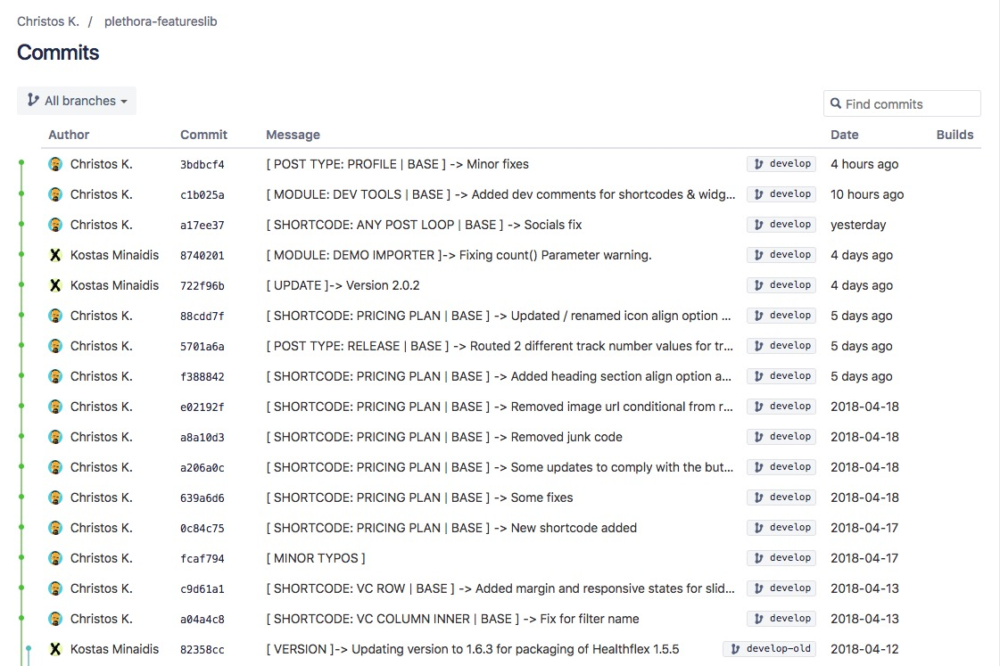

Kosmas Pouianou, Kostas Minaidis
Instructors at Social Hackers Academy
Create Things
Save Things
Edit Things
Save the Things Again
No control over our changes. They are permanent.
We cannot revert to a previous state.
There is no descriptive history of the changes.
It is almost impossible to work collaboratively.
A system that records changes to a file or set of files
over time so that you can recall specific versions later.
A system that enables collaboration:
A Team of people working on one Project, on the same files.
It allows you to:
Using a VCS also generally means that
if you screw things up or lose files, you can easily recover.
Version History
header: #ff69b4
footer: #185d2c
header: #457aa5, footer: #457aa5
header: #a57d45
header: #457aa5, footer: #ad2222
Create Things
Save Things
Edit Things
Save the Things Again
Create Things
Save Things
Edit Things
Save the Things Again
^
VCS comes into play at this stage.
Version Control Systems keep track of every file change,
and create a Version History (Database)
from these file changes (Versions).
Git is a very popular VCS.
It is a tool that we install on our computers and tracks
file changes and keeps a history of them (Commits)
It allows multiple users to work
on a Project at the same time.
No Waiting: Continue working while other people
are working on the same Project at the same time.
It supports a powerful feature called: Feature Branches.
Git is a Distributed VCS.
The Database of changes (Version History) is stored
on a central Server and shared among all users.
The Distributed nature of Git enables us to keep track of
each user's changes and contributions over time.
A Real Life Example of a Git Workflow in Production
Let's meet the 3 stages of Git
Git is a very popular VCS.
That's all Folks!